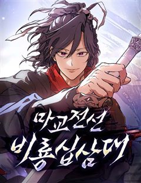
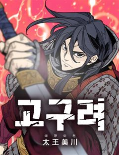
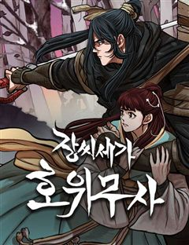
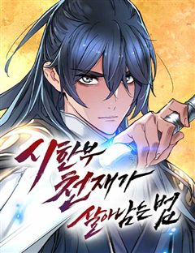
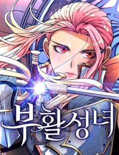
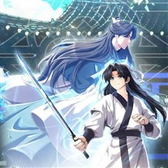

마도전생기 같은 웹툰 추천

마도전생기 · 포스스튜디오 / codezero
마도전생기 재밌게 봤다면 이 웹툰들도 좋아할 거예요. 같은 장르이면서 악역이주인공, 두뇌싸움, 힘숨찐 같은 요소가 겹치는 작품을, 겹치는 요소가 많은 순서로 20개 골랐어요.
2026-10-03 기준 · 네이버웹툰·카카오웹툰·레진코믹스 · 성인 작품 제외
내 취향으로 직접 골라 추천받기 →-
1
 네이버웹툰
네이버웹툰천마육성
마교의 태왕각주 ‘사마귀’의 명령으로 화산파 출몰 지역으로 파견나간 비객조. ‘설휘’는 화산파의 절대고수 ‘구종명’에게 죽임을 당할 위기에 처한다. 그때 눈 앞에 상태창이 나타나고 정찰 임무를 받기 직전으로 회귀하게 된다. 설휘는 자신이 전생에서 죽…
악역이주인공먼치킨회귀액션무협네이버웹툰에서 보기 → · 천마육성 같은 웹툰 → -
2
 네이버웹툰
네이버웹툰황제의 검
정난의 변에서 간신히 살아난 주윤문, 마교 천하제일 천마(天魔)와 소림사 육조 혜능(慧能)을 몸 안에 받아 천마서생 '파천'으로 재탄생하게 되는데… 절대지존을 향한 파천의 새로운 이야기가 시작된다!
전쟁먼치킨성장물액션무협네이버웹툰에서 보기 → -
3
 네이버웹툰
네이버웹툰화산귀환
대 화산파 13대 제자.천하삼대검수 매화검존 청명. 천하를 혼란에 빠뜨린 고금제일마 천마의 목을 치고 십만대산의 정상에서 영면. 백 년의 시간을 뛰어넘어 아이의 몸으로 다시 살아나다. ......뭐? 화산이 망해? 이게 뭔 개소리야!?
힘숨찐먼치킨회귀무협네이버웹툰에서 보기 → · 화산귀환 같은 웹툰 → -
4

네이버웹툰마교전선 비룡십삼대
한때는 가문의 수치, 지금은 기억력 만렙 무공 사기캐?! 죽었다 깨어나니 전선으로 회귀, 이번엔 진짜 돼지가 아니라고!
전쟁먼치킨회귀무협네이버웹툰에서 보기 → -
5
 네이버웹툰
네이버웹툰절대검감
단전이 부숴졌다는 이유로 집에서는 내놓은 자식 취급을 받던 소운휘는 혈교에 납치되어서도 삼류 첩자로 살아왔다. 어느 날, 전설로만 알려진 검선비록을 찾는데 이용당하다 죽은 운휘는 10년 전, 혈교에 납치되던 그 날로 돌아가게 되고 검의 목소리를 듣는…
먼치킨회귀성장물액션무협네이버웹툰에서 보기 → · 절대검감 같은 웹툰 → -
6
 네이버웹툰
네이버웹툰우주천마 3077
오랜 세월이 흘러 태산에 봉인된 천마가 눈을 떴을 때, 이미 인류는 방사능에 절여진 지구를 떠나 은하를 누비고 있었다.
힘숨찐먼치킨액션무협네이버웹툰에서 보기 → -
7

네이버웹툰고구려 태왕미천
고구려 왕손 을불. 가족의 원수로부터 왕위를 되찾고 진정한 왕으로 거듭난다! 400년 간 고구려를 침탈한 숙적들을 몰아내고 낙랑군을 수복하는 영웅의 성장기! 죽고 죽이는 치열한 전략과 전술이 펼쳐진다. 불세출의 영웅들이 격돌하는 전쟁 대서사시!
두뇌싸움전쟁무협네이버웹툰에서 보기 → -
8

-
9
 네이버웹툰
네이버웹툰모든걸 기억하는 천재무사
모든걸 기억하는 삼류무사 진소운. 30년 전 마교가 재림하기 전으로 회귀하다. 과거로 돌아온 사실이, 딱히 날더러 세상을 구하라는 신호로는 보이진 않는다. ‘그랬다면 최소한 뭔가 특별한 능력을 주거나 장삼봉 조사의 영혼 같은 거라도 붙여줘야 했을 테…
먼치킨회귀액션무협네이버웹툰에서 보기 → -
10
 네이버웹툰
네이버웹툰절대군림
"이 강호, 제가 먹습니다!" 왼손에는 군자검을, 오른손에는 지옥도를 든 미스터리한 과일상 아들. 입담과 재주는 물론, 압도적인 무공 실력까지 갖춘 완벽한 그의 진짜 정체는 무엇일까. '강호제패'를 품은 스무 살 청년, '적이건(赤利乾)'의 유쾌한…
힘숨찐먼치킨무협네이버웹툰에서 보기 → · 절대군림 같은 웹툰 → -
11

네이버웹툰장씨세가 호위무사
‘당신이 부른 것이오. 나란 사람을... ’ 은둔고수 광휘. 호위무사 되다. 웹소설 원작 웰메이드 무협 시대극!
힘숨찐먼치킨무협네이버웹툰에서 보기 → · 장씨세가 호위무사 같은 웹툰 → -
12

네이버웹툰시한부 천재가 살아남는 법
'스물을 넘기지 못하고 단명할 운명'을 타고난 정연신. 집안사람들 모두 연신을 홀대하지만, 직접 무공을 만들 정도로 그의 실력은 대단했다. 그러던 어느 날, 연신은 자신의 수명이 얼마 남지 않았음을 알게 되는데... 시한부 천재 정연신의 살아남기 위…
힘숨찐먼치킨무협네이버웹툰에서 보기 → -
13네이버웹툰
회귀한 천재 헌터의 슬기로운 청소생활
세계 최초 SSS랭크 천재 헌터 김준우. 어느 날 습격을 당해 죽게 되고, 10년 전으로 회귀한다. 스킬은 모두 봉인됐고, 해제를 위해서는 극한 직업인 던전 청소부로 일을 해야 하는데?! 하지만 이 청소부, 남다르다! 현직 헌터보다 더 강한 전직…
두뇌싸움먼치킨회귀액션네이버웹툰에서 보기 → -
14

네이버웹툰부활성녀
수십 년간 이어진 전쟁으로 황폐해진 프랑셀라 왕국. 시골 마을 동레미에 사는 잔 다르크는 어느 날, 정체불명의 약탈자들에 의해 마을이 습격을 당해 그 혼란 속에서 목숨을 잃는다. 정신을 차려보니 사건이 일어나기 전 아침으로 돌아와 있는 잔. 그녀의…
전쟁회귀성장물액션무협네이버웹툰에서 보기 → -
15
 네이버웹툰
네이버웹툰용사보다 너무 강해서 힘을 숨김
어릴 적부터 만화 속에 나오는 주인공보다 평소에는 가벼워 보이지만 사실 누구보다 강한 '힘을 숨긴 캐릭터'가 멋있었다 그리고 찾아온 전생의 기회! "새로운 세상에서 무엇이 되고 싶나요?" "힘숨찐이 되고 싶어!" ...내가 바란 힘숨찐은 이런 게 아…
힘숨찐먼치킨회귀액션네이버웹툰에서 보기 → -
16
 네이버웹툰
네이버웹툰할배무사와 지존 손녀
죽을 날을 앞두고 미련없이 생을 마무리 하려던 순간 덮친 멸문지화! 유진산은 홀로 생존한 갓난 손녀 '유설'이 다 자랄 때까지만이라도 살아남기로 결심한다. 이미 늙어버린 몸으로 육아와 수련을 병행하며 눈물겨운 사투를 벌이는 동안, 어느새 무림지존의…
먼치킨성장물액션무협네이버웹툰에서 보기 → -
17
 카카오웹툰
카카오웹툰천광명월
강자만이 살아남는 무림전국시대. 전쟁노예 천광과 중원제일의 기생 명월의 무림 생존기를 그린 가족 무협 액션 드라마.
전쟁액션무협카카오웹툰에서 보기 → · 천광명월 같은 웹툰 → -
18
 네이버웹툰
네이버웹툰천씨세가의 망나니가 되었다
천씨세가의 대공자, 천무량을 평생 호위하며 충성을 다한 한 무사, 무명(無名) 하지만 천무량에게 배신당해 생을 마감한다. 그러나 다시 눈을 뜬 그는 자신을 죽인 천씨세가의 망나니 대공자, 천무량이 되어 있었다. 과거의 기억과 무공, 냉정한 판단력을…
회귀성장물액션무협네이버웹툰에서 보기 → -
19

-
20

카카오웹툰대사형 이회
무술에는 재능이 없던 이회. 그는 성의문의 문주로 살다 혈교에 의해 무력하게 죽지만 과거로 돌아온다. 하지만 말이 대사형이지 사실상 애 보기, 빨래하기, 밥 짓기…개고생한 이전 생과는 다르게 살겠다고 마음먹은 이회. 그런데 뭔가 예상과는 다르게 흘러…
회귀성장물액션무협카카오웹툰에서 보기 →